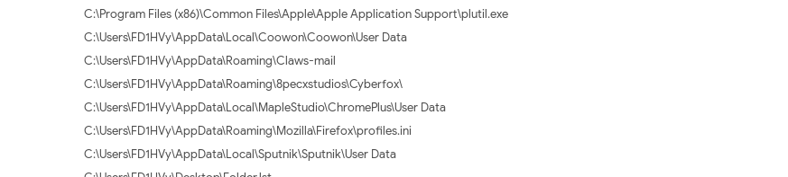

https://github.com/findthebad/model-3
sudo apt-get install docker
sudo apt-get install docker-compose
git clone https://github.com/findthebad/model-3
cd model-3/
docker-compose up
crazyeights@es-base:~/Desktop/model-3$ sudo docker-compose up
Malicious file is: FAX_RECEIPT_SO_151-154.exe
6F9CE67A343B9F8BED90957132BE043C
.NET based keylogger and RAT (Remote Access Trojan) readily available to actors. Logs keystrokes and the host's clipboard and beacons this information back to the command and control
Trojan: malware disguised a legitmate software
Virus Total reports smtp traffic - sending info to adversaries via smtp.
Snippet of behavior, shows it opening files that might contain personal information (ie. cookies, passwords, ..)
Saved my filter, went to discover and applied it again.
User: cb3f4b32-wsw10\lab-admin
Time: 2020-07-16 16:28:49.511
Process Create:
RuleName: -
UtcTime: 2020-07-16 16:28:49.511
ProcessGuid: {b0701843-8041-5f10-5701-000000000500}
ProcessId: 380
Image: C:\Users\lab-admin\FAX_RECEIPT_SO_151-154.exe
FileVersion: 1.1.1.1
Description: Lm5#_9Pqn{b0701843-8041-5f10-5701-000000000500}SQ4z$&w
Product: Lm5#_9Pqn{b0701843-8041-5f10-5701-000000000500}SQ4z$&w
Company: q)3B4aK#b%9YA
OriginalFileName: GENERALOZD.exe
CommandLine: "C:\Users\lab-admin\FAX_RECEIPT_SO_151-154.exe"
CurrentDirectory: C:\Users\lab-admin\
User: cb3f4b32-wsw10\lab-admin
LogonGuid: {b0701843-803e-5f10-4c57-110000000000}
Command used is:
"powershell.exe" -noninteractive -encodedcommand WwBDAG8AbgBzAG8AbABlAF0AOgA6AEkAbgBwAHUAdABFAG4AYwBvAGQAaQBuAGcAIAA9ACAATgBlAHcALQBPAGIAagBlAGMAdAAgAFQAZQB4AHQALgBVAFQARgA4AEUAbgBjAG8AZABpAG4AZwAgACQAZgBhAGwAcwBlADsAIABDADoAXABVAHMAZQByAHMAXABsAGEAYgAtAGEAZABtAGkAbgBcAEYAQQBYAF8AUgBFAEMARQBJAFAAVABfAFMATwBfADEANQAxAC0AMQA1ADQALgBlAHgAZQA=
which decodes to:
[.C.o.n.s.o.l.e.].:.:.I.n.p.u.t.E.n.c.o.d.i.n.g. .=. .N.e.w.-.O.b.j.e.c.t. .T.e.x.t...U.T.F.8.E.n.c.o.d.i.n.g. .$.f.a.l.s.e.;. .C.:.\.U.s.e.r.s.\.l.a.b.-.a.d.m.i.n.\.F.A.X._.R.E.C.E.I.P.T._.S.O._.1.5.1.-.1.5.4...e.x.e.
Filter winlog.event_data.TargetFilename
Filter event.action to be: Process Create (rule: ProcessCreate)
Time: 2020-07-16 16:28:45.288
Process: Powershell
File created:
RuleName: EXE
UtcTime: 2020-07-16 16:28:45.288
ProcessGuid: {b0701843-803c-5f10-4901-000000000500}
ProcessId: 1272
Image: C:\windows\System32\WindowsPowerShell\v1.0\powershell.exe
TargetFilename: C:\Users\lab-admin\FAX_RECEIPT_SO_151-154.exe
CreationUtcTime: 2020-07-16 16:28:45.288
FIN.